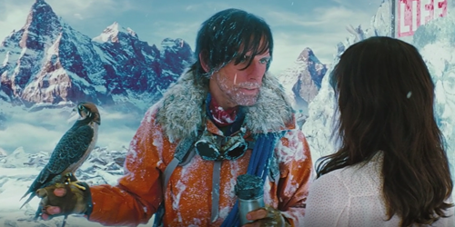
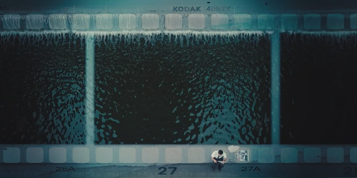
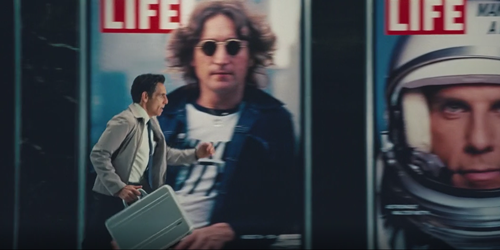
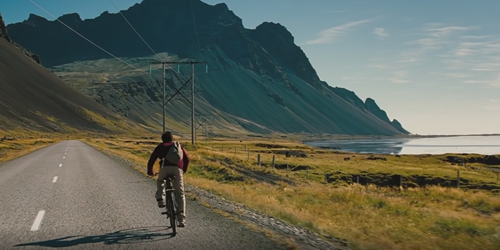
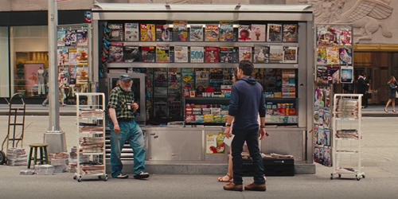

Story / 주요 장면
00:10:05; 잡지사 LIFE의 사진현상부 직원 월터. 지루한 일상의 유일한 탈출구는 멍때리기다. |
 | |
|  |
00:18:22; 사진작가 숀은 월터에게 25번째 필름의 사진을 꼭 표지에 쓰길 부탁하지만 아무리 찾아도 필름이 보이지 않는다. |
|
00:36:41; 끝내 필름을 찾지 못한 월터는 숀을 찾아가기로 결심하고 떠나게 된다. |
 | |
|  |
00:56:07; 월터는 숀을 찾는다는 목적 하나로 세계 이곳저곳을 돌아다니며 온몸으로 부딪친다. |
|
01:21:06; 드디어 숀을 만나게 된 월터. 필름의 위치를 알게되지만, 삶에 있어 더 중요한 것을 배운다. |
||
|  |
01:43:19; 숀이 삶의 정수라 표현한 25번째 필름의 사진이 담긴 라이프지의 마지막 호를 보게 된다. 마지막 표지는 무슨 사진이었을까? |
|
Where is your 25th film?
당신의 25번째 필름은 어디있나요?